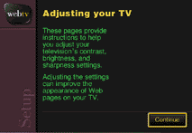

Adjusting your TV
Want to optimize your WebTV picture quality? Now you can adjust brightness, contrast, and sharpness for maximum visual clarity of the Internet.
Choose this picture
to optimize the
appearance of Web
pages on your TV.

Home
Sounds
Features
Sights
Next